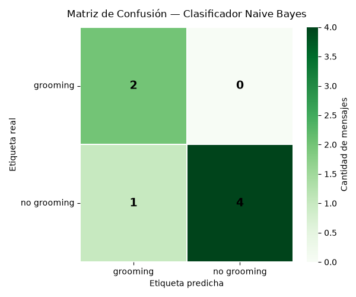

1. Introducción
El clasificador Naive Bayes es un algoritmo de aprendizaje automático fundamentado en el teorema de Bayes que presupone independencia condicional entre las variables de entrada. En este trabajo se implementa un clasificador Naive Bayes Multinomial para la detección de grooming en mensajes de texto, incorporando validación cruzada estratificada como esquema de evaluación robusta.
2. Planteamiento del problema
La tarea consiste en asignar a cada mensaje una de dos etiquetas: grooming (indicios de manipulación, secreto o pedido de imágenes) o no grooming (conversación cotidiana, académica o recreativa). Para la demostración se construyó un corpus piloto de 20 mensajes etiquetados manualmente y balanceados al 50%.
2.1 Corpus de ejemplo
data = {
'text': [
"¿Cuántos años tenés? No le digas a nadie que hablamos.",
"Hola, ¿cómo estás? ¿Querés jugar algo online?",
"Sos muy linda, no le muestres esto a tus papás.",
"¿Terminaste la tarea de matemáticas?",
"Podes mandarme una foto tuya, pero que sea solo para mí.",
"¿Querés que te ayude con el juego que no podías pasar?",
"No le contés a nadie que hablamos por acá, ¿sí?",
"¿Te gustó la película de ayer?",
"¿Estás solo en casa ahora?",
"¿Querés hacer una videollamada para estudiar juntos?",
"No le digas a tus padres que te escribí, es nuestro secreto.",
"¿Cómo te fue en el examen de historia?",
"Mandame una foto tuya, pero que nadie más la vea.",
"¿Jugamos Minecraft esta tarde?",
"Sos muy especial para mí, no le cuentes a nadie que hablamos.",
"¿Querés que te pase los apuntes de biología?",
"¿Podes mostrarme cómo estás vestida ahora?",
"¿Tenés ganas de salir a andar en bici mañana?",
"No hace falta que le digas a nadie que hablamos tanto.",
"¿Querés que estudiemos juntos para el parcial?"
],
'label': [
"grooming", "no grooming", "grooming", "no grooming", "grooming",
"no grooming", "grooming", "no grooming", "grooming", "no grooming",
"grooming", "no grooming", "grooming", "no grooming", "grooming",
"no grooming", "grooming", "no grooming", "grooming", "no grooming"
]
}3. Metodología
Se construyó un pipeline de scikit-learn que encadena la vectorización del texto con el clasificador:
- CountVectorizer: transforma cada mensaje en un vector de frecuencias (bolsa de palabras).
- MultinomialNB: clasificador probabilístico adecuado para conteos de términos.
- StratifiedKFold (k=5): validación cruzada preservando la proporción de clases.
pipeline = Pipeline([
('vectorizer', CountVectorizer()),
('classifier', MultinomialNB())
])
cv = StratifiedKFold(n_splits=5, shuffle=True, random_state=42)
scores = cross_val_score(pipeline, X, y, cv=cv, scoring='accuracy')4. Resultados
4.1 Validación cruzada
| Métrica | Valor |
|---|---|
| Exactitud por fold | [1.0, 0.5, 1.0, 0.75, 0.75] |
| Exactitud media | 0.80 |
| Desviación estándar | 0.187 |
La variabilidad observada es esperable dado el tamaño reducido del corpus: cada fold contiene apenas 4 mensajes, por lo que un único error altera significativamente la métrica.
4.2 Reporte de clasificación
precision recall f1-score support
grooming 0.67 1.00 0.80 2
no grooming 1.00 0.80 0.89 5
accuracy 0.86 7
macro avg 0.83 0.90 0.84 7
weighted avg 0.90 0.86 0.86 7grooming indica que no se omitió ningún caso positivo. El precio es un falso positivo (precisión 0.67), situación preferible en este dominio: es menos grave generar una alerta a revisar que dejar pasar un caso real.
4.3 Matriz de confusión

5. Inferencia sobre mensajes nuevos
Una vez entrenado el modelo sobre el corpus completo, se evalúan cuatro mensajes no vistos:
| Mensaje | Predicción |
|---|---|
| "¿Podés mandarme una foto tuya? No se la muestres a nadie." | grooming |
| "¿Jugamos Minecraft esta tarde?" | no grooming |
| "No le digas a tus papás que hablamos, ¿sí?" | grooming |
| "¿Terminaste el trabajo práctico de historia?" | no grooming |
6. Limitaciones y mejoras
- Corpus reducido: 20 mensajes son insuficientes para generalizar; se recomienda ampliar a 200–1000 ejemplos.
- Sin preprocesamiento: falta normalización, eliminación de stopwords y lematización.
- Vectorización básica:
CountVectorizerno pondera importancia; conviene evaluarTfidfVectorizer. - Independencia condicional: supuesto no realista en lenguaje natural.
- Ética: el modelo debe operar como herramienta supervisada por personas, con protocolos de derivación y resguardo de la privacidad de menores.
7. Conclusión
Se implementó un clasificador Naive Bayes Multinomial integrado en un pipeline de scikit-learn. La validación cruzada arrojó una exactitud media del 80% (desvío 0.187) y sobre el conjunto de prueba se obtuvo un 86%, con recall perfecto para la clase de riesgo. El trabajo permitió consolidar conceptos centrales —representación vectorial de texto, entrenamiento probabilístico, validación cruzada y análisis mediante matriz de confusión— sobre un problema socialmente relevante.